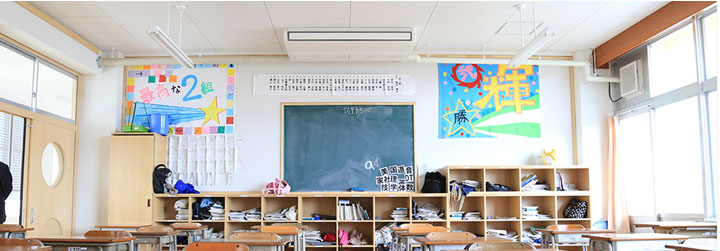

教育活動

ほそごう学園では、体育大会・文化発表会は、小中一体９学年で実施します。下級生が上級生の競技・演技に憧れを持つ効果が期待できます。また、これまでの小中の区切りの必要性を考慮し、小学校卒業式、中学校入学式は実施します。
3つのステージで育つ子ども
前期（1～4年）
前期は、入学したばかりの1年から学園生活に慣れてきた4年までが、学びの基礎を育てる重要な時期です。学級担任の丁寧な指導や支援とともに、時には学年合同で学びます。
また、池田市では1年から外国語活動で英語を学びます。前期は、自分や家族をはじめ身近な人との出会いを通して、人同士や人とものとのつながりを発見する時期でもあります。
- ◆入学式 対面式 学園探検 校外学習 地域へ出かける学習
- ◆学級担任による丁寧な学習指導 学年合同学習
- ◆生活習慣・集団生活の指導
中期（5～7年）
中期は、前期で身につけた学びの基礎を踏まえて、さまざま」な方面に世界を広げる時期です。
ほそごう学園では、これまで課題の大きかった7年（中1）の学習指導と生活指導をよりスムーズにするために教科学習では5年から、一部教科担任制を導入し、小中の教員が一体となって専門性を活かした学習指導を行います。
また、自然学舎（5年）、修学旅行（6年）、自然学舎（7年（中1））といった、宿泊行事の中で自分と仲間をみつめ、さまざまな体験学習を行います。
日々の学びでも地域に出かけ、人々との出会いで社会性を身につけることが重要です。7年（中1）では、後期を視野に入れ、職業インタビューなど将来の仕事に関する学習も始まります。
- 主な学習と行事
- ◆自然学舎 修学旅行 小学校卒業式 中学校入学式
- ◆小中教員が一体になった教科担任制授業（一部教科） 少人数指導の本格実施
- ◆5・6年は、標準服着用 7年（中1）から制服着用
後期（8～9年）
後期は9年間の学習の総仕上げであるとともに、将来を見据えた進路選択の重要な時期です。8年での職場体験学習、9年での進路学習、人権学習の集大成である命の学習を通して、社会で生きていく力を育てます。
特に高校等への進学を中心とした進路指導については、単に学校選びに終わるのではなく、18歳での多様な進路選択が可能になるようなキャリア形成をめざした学習や丁寧なガイダンスを実施します。
- 主な学習と行事
- ◆宿泊体験学習 修学旅行 中学校卒業式
- ◆進路選択を見据えた少人数指導の実施 進路学習